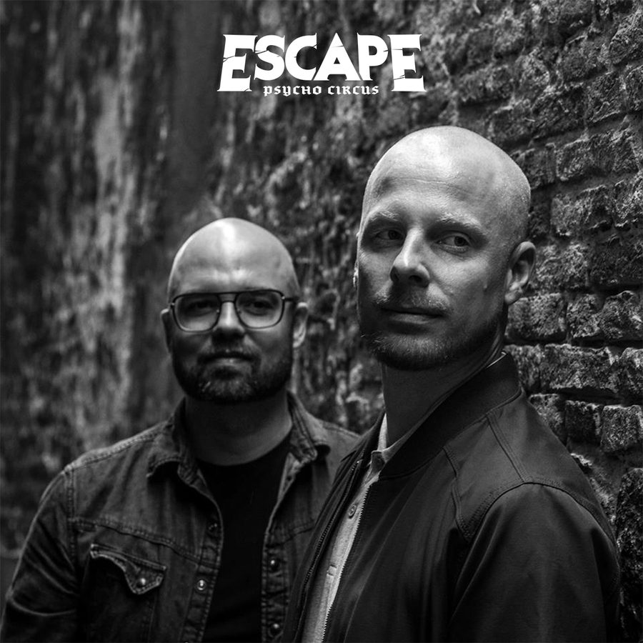

Tinlicker Traverses the Smoothest Grooves on Escape: Psycho Circus 2018 Mix


“Yes, it’s been great the way Above & Beyond have been supporting us this last year. We’re very excited about the future.”
So opens the conversation with Dutch progressive duo Tinlicker. Originally started as a solo project for Micha Heyboer—who’s operated the legendary Black Sun Empire drum & bass collective with brother Milan and Rene Verdult since the ‘90s—it was a formal avenue outside his traditional stomping grounds for exploring his knack for silky-smooth yet distinctly upbeat progressive grooves (which he’d dabbled in over the years).
Soon after the first Tinlicker release in 2012, Micha was introduced to Jordi van Achthoven, and it’s been a swift rise of prolific output in the years since, peaking this month when one of Tinlicker’s biggest productions to date made an appearance in Above & Beyond’s warmup set at their ABGT300 party. And Tinlicker is set to have more involvement with the Anjuna camp in the near future.
“We’ve completed a remix for Above & Beyond’s ‘Always,’” the duo told Insomniac. “And at this very moment, we’re also about to finish a new EP for mau5trap. In addition to that, more good things are about to happen, and we cannot wait to share the developments with everybody.”
The alignment with big-hitters like Anjuna and mau5trap complements the rest of their impressive back catalog, released with similarly prominent stables like Armada and Zerothree (with which Ticklicker dropped their debut album in 2013). It’s a list of labels that shows just how much of a name Tinlicker have been able to make for themselves in such a short period of time.
“During the time when the first Micha-produced Tinlicker release came out, Jordi was releasing under his alias ‘Mike Luck.’ Somehow, both of our music was promoted by the same PR company, Publicity Lab, and it was actually Nicole from there who linked us. She was like, ‘You guys live in the same city, and musically, you have the same vibe; maybe you should meet each other.’ So, we did meet for a beer and decided to go into the studio together and make music. In the first five sessions, we wrote five tunes, which ended up being the first EP we released on Feed Me’s label Sotto Voce. The energy and atmosphere were great, and after a while, we decided to join forces and become the one act.”
Importantly, the Tinlicker sound is positioned in a rather versatile place that traverses house, progressive and trance, which has allowed the duo to coast neatly alongside the fringes of all three of these scenes, while also building an elusive Tinlicker sound that is unmistakably all their own.
“When it comes to genres, we don’t have rules,” they say. “The only rule we have is that we like what we create. Importantly, we both come from a totally different background when it comes to producing music. Micha comes from a history of drum & bass and dubstep, and Jordi from house, progressive and ambient—though we both have a passion for electronic music. And when it comes to the music we listen to, we share a lot of the same artists and different genres that we enjoy. You can probably hear the influences in our music, and that’s the versatility that makes it ‘Tinlicker.’”
The milestone for Tinlicker arguably came last year with their first release on Anjunadeep, “Soon You’ll Be Gone,” which had made an earlier initial appearance in the label’s Anjunadeep 08 compilation in the closing months of the preceding year. The track saw the duo doing great work with vocalist Thomas Oliver, balancing euphoria and deepness in a way that was just right for the label.
Ticklicker actually caught lighting in a bottle twice with this year’s “Nothing Without You” on Anjunadeep, the recipe arguably proving even more potent this time. It saw them teaming again with Thomas Oliver on vocals, making an even more prominent appearance on last year’s Anjunadeep 09 compilation. And it was their new tranced-up rework of “Nothing Without You” that was aired at the aforementioned ABGT300 earlier this month.
“Vocal songs tend to reach a wider audience. People can relate to the words and make the song a part of their lives. Thomas’ voice has such a great character; it’s like sliding into a warm bath after a crappy day… These releases have been essential for Tinlicker, though we didn’t plan it like that at all. We just continue to make music and take it from there, though it’s amazing to see how many people can relate to what we do.”
At the time of writing, the Amsterdam Dance Event (ADE) has just wrapped up, with the weeklong industry conference and festival seeing the duo DJing in support of Armin van Buuren for one of his rare Gaia shows at Paradiso.
“We have played the spectrum of intimate club shows, bigger venues, plus some great festivals across Holland, Belgium and the US, and every show is great in its own way… We always try to play together, but unfortunately, time-wise, we cannot always manage to play together.”
Tinlicker has an appearance coming up shortly at Escape: Psycho Circus, Insomniac’s annual Halloween fright fest. To celebrate the occasion, they’ve put together a special Tinlicker mix that is positively packed with their own productions and remixes—plus a few sneaky bootlegs.
“The mix is just a reflection of what we play in our sets. We like to make edits and bootlegs of songs we both love as an homage to the original artist, so we’ve got something special to drop into our sets.”
Tinlicker’s Escape: Psycho Circus 2018 Mix Track ListBen Böhmer “Dive”
Koreless “Lost in Tokyo” (Tinlicker Edit)
Florian Kruse & Raphael Hofman “I Want You”
Sixto Rodriguez “Sugar Man” (Tinlicker Edit)
Lane 8 ft. Fractures “Clarify” (Tinlicker Remix)
Tinlicker “About You”
Nathan Fake “The Sky Is Fake” (James Holden Remix) [Tinlicker Edit]
Tinlicker “Cookiebird”
Tinlicker ft. Thomas Oliver “Nothing Without You” (Tinlicker Rework)
Tinlicker ft. Alt J “Breezeblocks”
Tinlicker “Less Than a Minute”
Escape: Psycho Circus 2018 takes place Friday, October 26, and Saturday, October 27, at the NOS Events Center in San Bernardino, CA. Tickets are on sale now. For more information, visit the official website.
Follow Tinlicker on Facebook | Twitter | SoundCloud
Follow Escape: Psycho Circus on Facebook | Twitter | Instagram